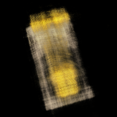
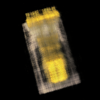
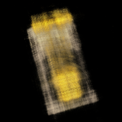
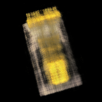
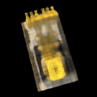
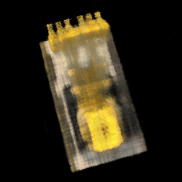

Part 0


MLP: layers=4, width=256, PE L=10, lr=0.01 Training on mps for 2000 iters, batch size 10000


This is a description of Part 2 results and observations.


 



 



This paragraph explains the results and observations for Part 2.6.